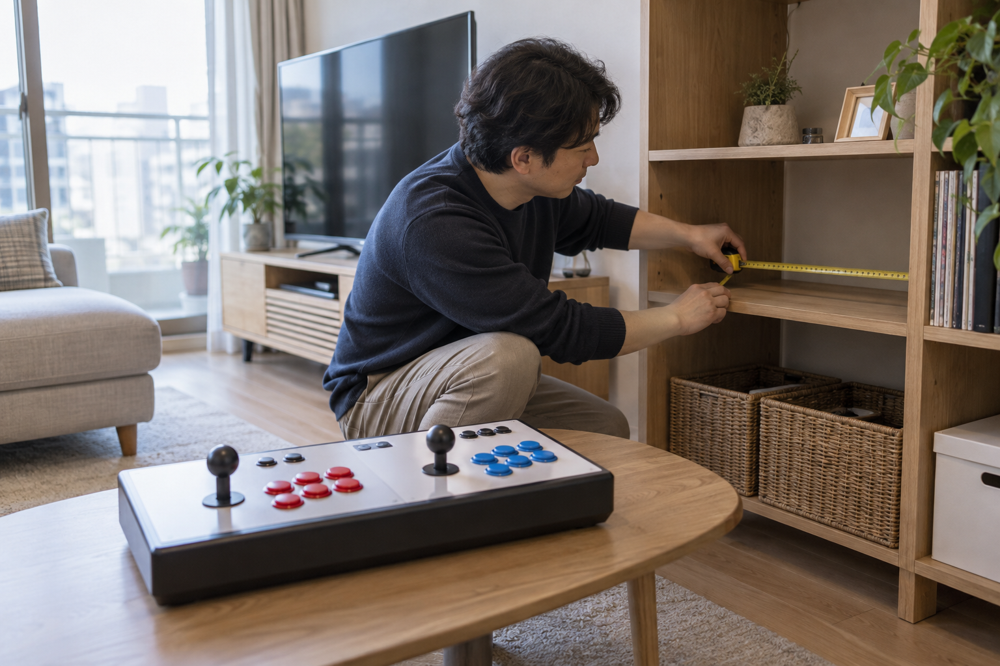
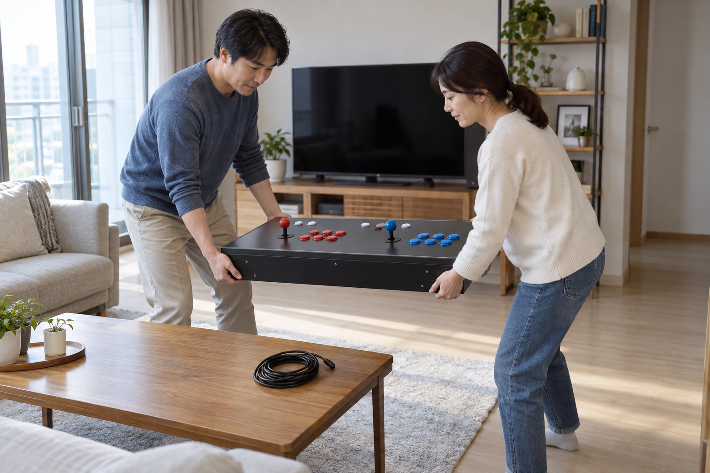

분리형 오락기는 ‘분리형’이라는 이름만 보고 보관과 이동이 쉽다고 단정하면 안 됩니다. 본체와 조작부의 실제 크기와 무게, 보관할 선반의 안쪽 치수, 연결선을 정리하는 방법과 집 안 이동 경로를 제품별로 확인한 뒤 선택하세요.

본체와 보관 공간을 따로 재세요
본체와 조작부가 나뉘는 제품이라면 각 부분의 폭·깊이·높이를 따로 확인하고, 선반이나 수납장의 문을 연 실제 안쪽 크기와 비교하세요. 조이스틱이 위로 올라온 높이와 연결 단자가 있는 면까지 포함해야 수납할 때 눌리거나 선이 꺾이는 일을 줄일 수 있습니다.
분리형 오락기의 보관 가능 여부는 이름이 아니라 각 부분의 실제 치수로 판단해야 합니다.
보관 자리와 통로를 재는 방법은 가정용 오락기 설치 공간 측정법에서 이어서 확인할 수 있습니다.
- 본체와 조작부의 폭·깊이·높이
- 조이스틱을 포함한 전체 높이
- 선반과 수납장 문을 연 안쪽 치수
- 연결선과 어댑터를 따로 둘 자리
이동 전에 연결 상태를 기록하세요
전원을 끈 뒤 제품 안내에 따라 연결선을 분리하고, 어느 단자에 어떤 선이 연결됐는지 사진으로 남겨 두세요. 케이블은 단자를 잡고 분리하며 조이스틱이나 버튼 위에 다른 구성품을 올리지 않는 편이 좋습니다.
이동 전에는 전원과 연결선을 분리하고 구성품의 연결 상태를 사진으로 남겨야 합니다.

이동 경로와 함께 들 사람을 정하세요
문턱과 가구 모서리, 바닥의 장애물을 먼저 치우고 실제로 지나갈 길을 확인하세요. 혼자 들 수 있는지는 제품 무게와 잡을 위치, 판매자 안내를 확인해 판단하고, 확신하기 어렵다면 무리해서 옮기지 말고 도움을 요청하세요.
들어 올리는 사람 수는 제품의 무게와 잡을 위치를 확인한 뒤 정해야 합니다.
스탠드형 제품의 이동 준비와 차이는 스탠드형 오락기를 옮길 때 확인할 점에서도 비교할 수 있습니다.
제품별 구성과 보관 방법을 확인하세요
노리박스 공개 제품 목록에는 ‘노리박스 분리형 레트로 가정용 오락실게임기 TV연결 휴대용’과 ‘레볼루션 RV팩 128G 7078게임 TV연결형 분리기통 오락실게임기’가 각각 안내되어 있습니다. 같은 분리형 범주라도 구성과 크기는 다를 수 있으므로 구매하려는 제품의 현재 판매 페이지에서 치수·무게·구성품과 보관 안내를 확인하세요.
같은 분리형이라도 구성과 크기가 다르므로 판매 페이지의 현재 안내를 각각 확인해야 합니다.
분리형 제품 보기와 제품자세히보기에서 현재 구성을 확인하고, 보관 장소와 이동 경로를 정리한 뒤 연락하기에서 문의하세요.